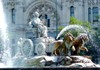
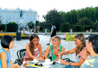

Herfst (september en oktober) is het beste seizoen om Madrid te bezoeken, aangezien de dagen zonnig zijn en er een zachte temperatuur heerst. De winters zijn koud, hoewel de temperatuur maar zelden ver onder de nul komt... dit geldt ook ´s nachts. De lente brengt verfrissende regenbuien met zich mee, terwijl het in de zomer verzengend heet is.
Van plan om naar Madrid te komen? Houdt dan de volgende interessante data in gedachten!
MEI: Dos de Mayo en San Isidro
Madrid verwelkomt de lente met een aantal festiviteiten. Allereerst is er Dos de Mayo, dat herdacht wordt ter ere van de Madrileense opstand tegen de bezetting van Napoleon op 2 mei 1808. Op 15 mei worden de Fiestas de San Isidro gevierd ter ere van de beschermheilige van Madrid. De hele week kan men genieten van stierengevechten, typische muziek en traditionele kleding en niet te vergeten feesten, die tot in de vroege uurtjes doorgaan.
|   |
AUGUSTUS: Wijk-Fiestas
Zodra het een beetje begint af te koelen in de zomer, houden verschillende wijken plaatselijke feesten ter ere van hun beschermheilige. Veel barhouders delen op straat drankjes uit, vooral in de oude stadsgedeelten, zoals Lavapiés en La Latina.
DECEMBER: Kerstmis en oudejaarsavond
Tijdens kerstmis worden in Madrid alle straten en pleinen verlicht door vele kerstversieringen. Puerta del Sol is afgeladen met mensen, die willen winkelen, en het oude jaar eindigt hier met uitbundige nieuwjaarsvieringen. Het hele land telt de seconden af via de klokkentoren in Sol, waarbij men naar traditie bij iedere klokslag een druif dient te eten. Studenten die graag een te gekke oudejaarsavond willen hebben, kunnen Spaans gaan studeren in Madrid.